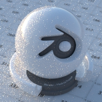
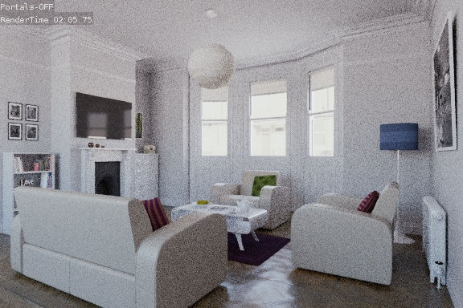
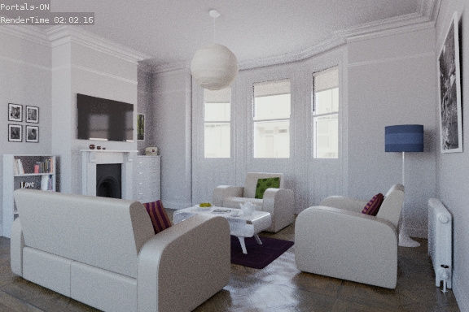

World¶
Lighting with an HDR image.
The world environment can emit light, ranging from a single solid color, physical sky model, to arbitrary textures.
Surface Shader¶
The surface shader defines the light emission from the environment into the scene. The world surface is rendered as if it is very distant from the scene, and as such there is no two-way interacting between objects in the scene and the environment, only light coming in. The only shader accepted is the Background node with a color input and strength factor for the intensity of the light.
图像 Based Lighting¶
For image based lighting, use the Environment 纹理 node rather than the 图像 纹理 node for correct mapping. This supports Equirectangular (also known as Lat/Long) for environment maps, and 镜像 Ball mapping for converting photos of mirror balls to environment maps.
Volume Shader¶
A volume shader can be applied to the entirely world, filling the entire space.
Currently this is most useful for night time or other dark scenes, as the world surface shader or sun lamps will have no effect if a volume shader is used. This is because the world background is assumed to be infinitely far away, which is accurate enough for the sun for example. However, for modeling effects such as fog or atmospheric scattering, it is not a good assumption that the volume fills the entire space, as most of the distance between the sun and the earth is empty space. For such effects it is be better to create a volume object surrounding the scene. The size of this object will determine how much light is scattered or absorbed.
Ambient Occlusion¶
Ambient occlusion is a lighting method based on how much a point on a surface is occluded by nearby surfaces. This is a trick that is not physically accurate, but it is useful to emphasize shapes of surfaces, or as a cheap way to get an effect that looks a bit like indirect lighting.
- Factor
- The strength of the ambient occlusion; value 1.0 is like a white world shader.
- Distance
- Distance from shading point to trace rays. A shorter distance emphasizes nearby features, while longer distances make it also take objects further away into account.
Lighting from ambient occlusion is only applied to diffuse reflection BSDFs; glossy or transmission BSDFs are not affected. Transparency of surfaces will be taken into account, i.e. a half-transparent surface will only half occlude.
An alternative method of using Ambient Occlusion on a per-shader basis is to use the Ambient Occlusion shader.
Sampling¶
- Multiple Importance Sample
- Enabling this will sample the background texture such that lighter parts are favored, producing less noise in the render. It is almost always a good idea to enable this when using an image texture to light the scene, otherwise noise can take a very long time to converge.
- Map Resolution
- Sets the resolution of the ‘Multiple Importance Sample’ map. Higher values may produce less noise when using high-res images, but will take up more memory and render slightly slower.
Below is a comparison between Multiple Importance Sample Off and On - both images rendered for 25 seconds (Off: 1500 samples, On: 1000 samples)

Multiple Importance Sample Off. |

Multiple Importance Sample On. |
For interior scenes, noise can be significantly reduce by setting up area lamps as light portals.

Without Light Portals. |

With Light Portals. |
{kind=link}
{kind=link}
Ray Visibility¶
As with other objects, Ray Visibility allows you to control which other shaders can “see” the environment.
Tricks¶
Sometimes it may be useful to have a different background that is directly visible versus one that is indirectly lighting the objects. A simple solution to this is to add a Mix node, with the Blend Factor set to Is 相机 Ray. The first input color is then the indirect color, and the second the directly visible color. This is useful when using a high-res image for the background and a low-res image for the actual lighting.
Similarly, adding the Is 相机 and Is Glossy rays will mean that the high-res image will also be visible in reflections.
{kind=link}
节点 for the trick above.